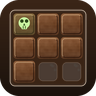

已暂停
仿真停在第 0 步：碎屑悬在半空，恢复后接着落。
仿真停在第 0 步：碎屑悬在半空，恢复后接着落。
一条巧克力刻成方格，左上角那格有毒。苍白的骷髅标着它 —— 那是永远留到最后的“一口”。

轮到你，就按住一格拖动再松口。被高亮的整个右下方象限一起进嘴：咬 (r, c) 带走第 r 行第 c 列往右、以及它下面每一行第 c 列往右的全部格子。
被迫咬下毒格的人输。所以目标是把「只剩毒格」交到对手手上。右侧 当前判定 与 开局证明 是穷举 minimax 的读数，不是猜的。
键盘可全打：方向键 移准星 · Enter/Space 咬下 · P 暂停 · R 重开 · M 静音 · F 全屏 · ? 再看这一页。